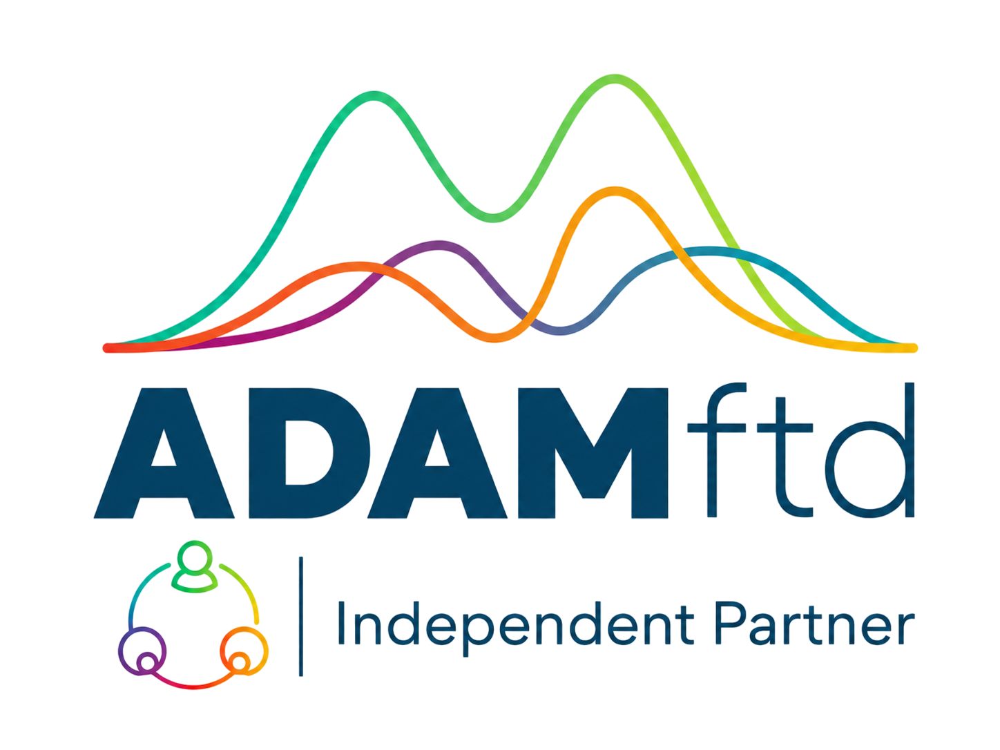

01
Verification
Supplier & buyer verification
“Can I trust this company, its shipment history, and the commercial signal?”
Turning trade uncertainty into qualified referrals.

A practical deck for positioning ADAMftd around supplier and buyer verification, counterparty discovery, market analysis, and price & tariff volatility.
Customize with your referral link and code before sharing.
Companies rarely buy “data.” They buy confidence before making decisions.
“Can I trust this company, its shipment history, and the commercial signal?”
“Who should I approach, and why are they likely to be relevant?”
“Which country, segment, product or route deserves my attention?”
“What can damage margin between quote, shipment and delivery?”
Use this line before any demo or offer.
ADAMftd is an AI‑native trade intelligence platform grounded in source data that helps companies verify counterparties, discover buyers and suppliers, analyse markets, and protect margins from price and tariff volatility.
Safe positioning: historical trade and shipment data, not real-time shipment tracking. Coverage varies by country, commodity, source and data availability.
Help the customer move from a hunch to a defensible decision in four moves.
Company name, country, product, HS code, and buyer or supplier role.
Look for shipment patterns, trade lanes, counterparties, markets and consistency.
Screen sanctions, company context, and market plausibility.
Proceed, ask more questions, request documents, or exclude.
“Before you send money, sign a contract or schedule a meeting, use ADAMftd to verify whether the counterparty is commercially plausible.”
Walk the customer through the funnel that turns a universe of possibilities into a first call.
Many possible companies in the category, country or product class.
Country, product and trade lane match the customer’s offer.
Real activity, volume and patterns — not just a directory line.
The best first contacts to warm up — ranked, not random.
“Which buyer, supplier or importer would be valuable if we could validate activity and relevance before outreach?”
Where to sell, source or invest attention — built from five repeatable lenses.
“Instead of guessing whether a market is worth entering, use ADAMftd to build a practical market review from trade flows, company activity, tariffs, tenders and risk signals.”
Six moments between quote and delivery where margin gets quietly killed.
Base price — the number the buyer expects.
Duty exposure that can move overnight.
Freight, lane and capacity risk along the way.
Landed cost — what actually arrives where.
Profit after every shift, fee and surprise.
Proceed, renegotiate, reroute or hold.
A better conversation before price, duty, route or demand shifts damage profitability.
ADAMftd helps review exposure — it does not guarantee future prices or duty outcomes.
Identify the highest-value entry point before you open the product.
“Are you trying to validate a buyer, supplier or importer before engaging?”
“Do you need better targets than generic contact lists?”
“Which market or segment are you considering, and what evidence would de-risk the decision?”
“Where are tariffs, prices, freight or route changes hurting margin?”
Diagnose before demo. The best demo is the one that matches the pain.
Five chunks of two minutes. Same shape every time, so the customer always knows where you are.
“Register through my partner link and test this on your own product, company or market.”
Three reasons to register today — and one link to remember.
25 standard + 25 partner bonus credits on registration.
Applied once on the first Growth or Pro monthly upgrade.
Included with any annual Pro signup through your link.
[AFFILIATE‑CODE]
Always share the referral link — not only ADAMftd.com. Without your code, you don’t get attributed.
Two columns. Use the left. Avoid the right.
Same leaflet, two audiences — in this order.
“Start free through my partner link. Use your own product, market or company as the first test. If it helps, we can then look at paid access, annual Pro, or an approved sub-affiliate path for your own network.”
Sub-affiliate wording: “Ask this partner about joining their network as an approved sub-affiliate.”